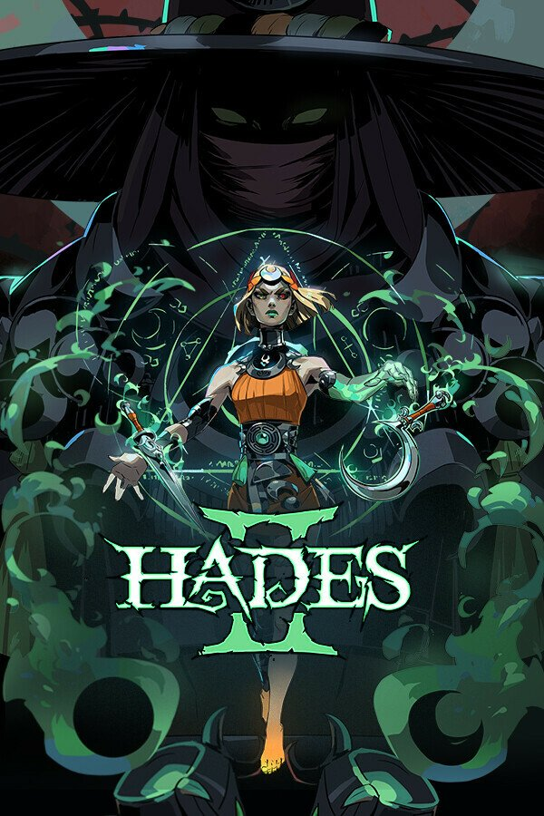
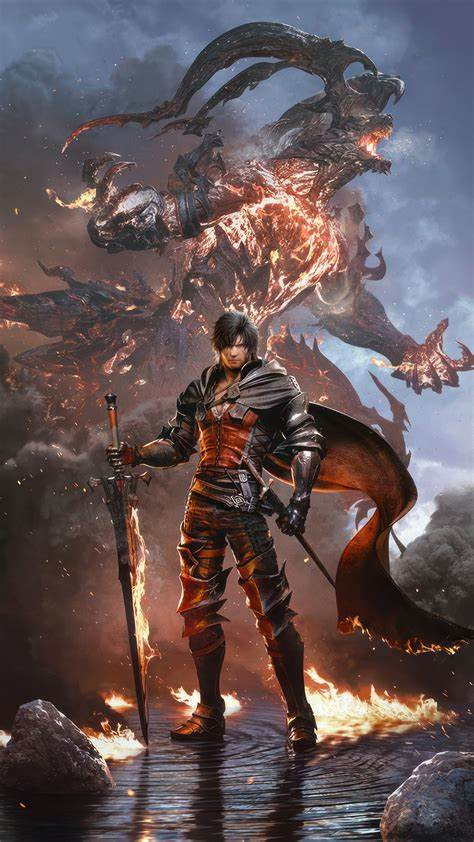
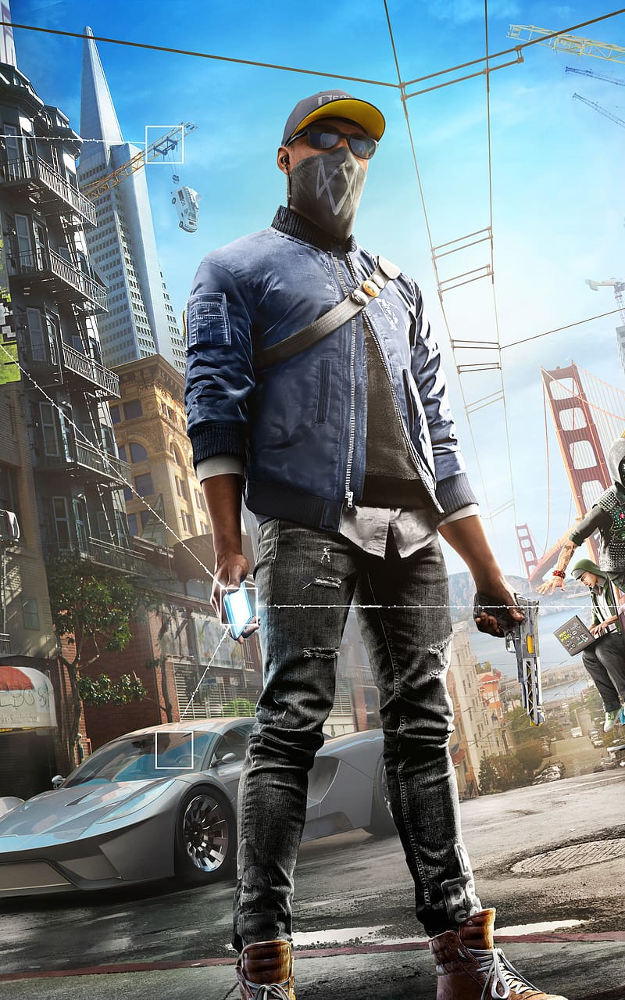

Hades 2
Rougelike ActionBattle beyond the Underworld using dark sorcery to take on the Titan of Time in this bewitching sequel to the award-winning rogue-like dungeon crawler.

Battle beyond the Underworld using dark sorcery to take on the Titan of Time in this bewitching sequel to the award-winning rogue-like dungeon crawler.

An epic dark fantasy where fates are decided by mighty Eikons and the Dominants who wield them. This is the tal of Clive Rosfield, a tragic warrior who swears revenge on the Dark Eikon Ifrit, a mysterious entity that leaves naught but calamity in its wake.

This is an action-adventure game in which players assume the role of a man (Marcus Holloway). Welcome to San Fransisco. Play Marcus, a brilliant young hancker, and join the most notorious hacker group, DedSec. Your objective: execute the biggest hack of history.

Connect with fellow gamers in our forums and chatrooms!
Join the Discord!